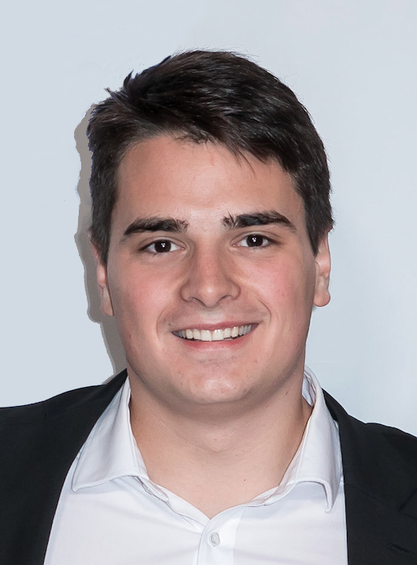

nikola.s@ucla.edu
| I am a UCLA Computer Science 3rd year Undergraduate working in Prof. Jason Cong's Lab. My research is currently focused on sorting in hardware and on Field Programmable Gate Arrays. You can follow my research on Github. |  |
I am at UCLA Engineering 6, Lab 468. You can also reach me by email at nikola.s@ucla.edu.